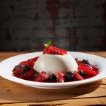

Los postres más irresistibles con recetas tradicionales de Italianni’s.
TIRAMISÙ
(1520 CAL)
Pastel elaborado con galletas soletas cubiertas con café espresso, montadas con auténtico queso mascarpone, licor de café, ron y hojuelas de chocolate, espolvoreado con cocoa.
PASTEL DE CIOCCOLATO CON FRAMBUESA
(1490 CAL)
Una rebanada de nuestro pastel de chocolate semiamargo con frambuesas, acompañado de una suculenta salsa de frambuesa.

PANNA COTTA
(1110 CAL)
“Ricetta tradizionale piemontese”. Crema dulce con amaretto sobre un espejo de salsa de frambuesa, acompañado de fresas, moras y zarzamoras.
TARTA DI MELA
(2870 CAL)
¡Como se come en las auténticas gelaterie D’Italia! (heladerías de Italia!). Delicioso postre de manzana horneado, acompañado de gelato (helado) de vainilla
BUDÍN DE PAN
(1400 CAL)
Receta casera de un delicioso postre hecho con pan toscano relleno de pasas, cubierto con crema inglesa y canela
AFFOGATO AL CAFFÈ
(170 CAL)
Delicioso helado de vainilla bañado con café expresso. ¡Un postre clásico de Italia!
CRÈME BRULÈE
(1130 CAL)
Exquisito postre horneado con sabor vainilla, con una cubierta caramelizada de azúcar.